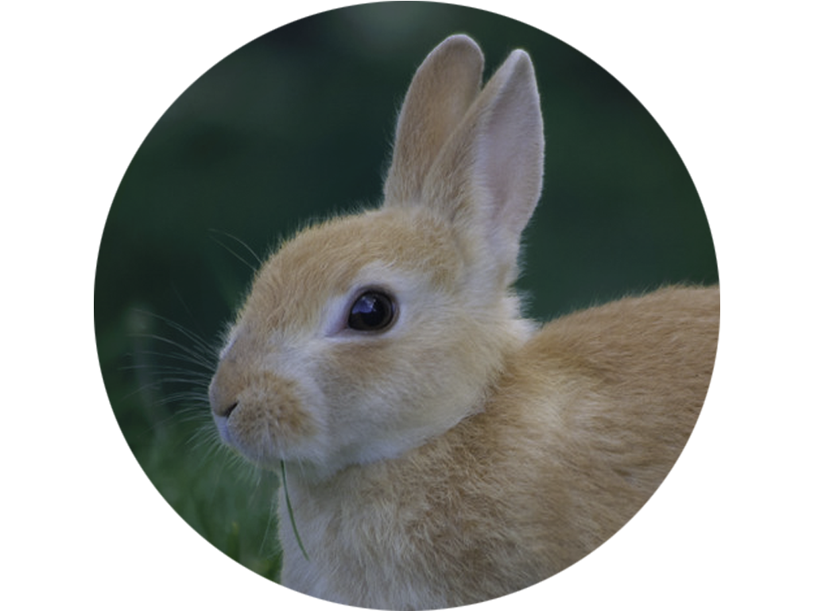

Cynthia Bao
Student
Cynthia is a hard driven, passionate, and determined high school student. She enjoys
playing badminton, painting acrylic paintings, and reading novels in her free time. In order
to give back to her community, she plans to volunteer in an art studio this summer.
Cynthia is currently taking a web design
class that has taught her many skills useful to programming and designing websites.
She hopes to one day become a programmer in an area that she is interested in, for
example, creating apps. Both of Cynthia's parents have jobs in the broad field of
computer science, and they got her interested in it too. Freshman year, she decided
to take AP Computer Science Principles to test the waters out, and found that she really
liked the logical problem-solving theme of computer programming. Sophomore year,
she decided to take Web Design to learn how to create websites and Computer Information
Systems to learn more about the computer's applications. In Computer Information Systems,
she learned how to use many programs including but not limited to Photoshop, Excel, Word,
and many of the different Google Applications. Junior year, she plans on
taking Computer Science A/Data Structures in order to obtain more knowledge.